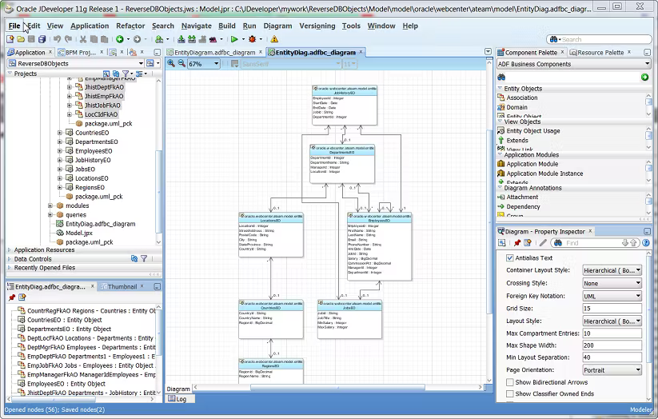
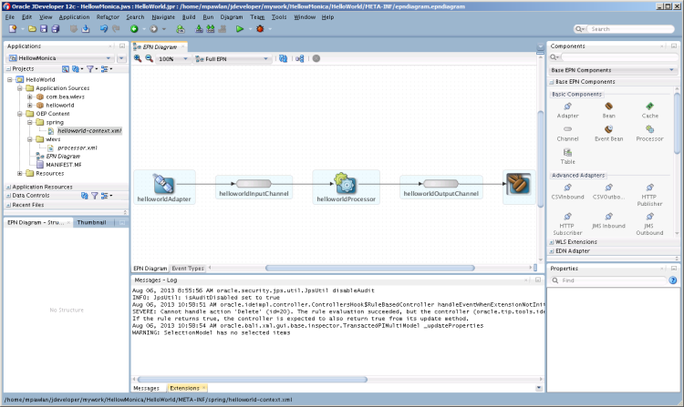

2.3.4.- JDeveloper.
JDeveloper es un entorno de desarrollo integrado (IDE) desarrollado por Oracle y disponible de forma gratuita desde 2005. Se trata de un entorno que cubre todo el ciclo de vida del desarrollo software, proporcionando funcionalidad para las fases de diseño, codificación, depuración y despliegue, mediante una aproximación visual y declarativa.
Las principales características de JDeveloper son las siguientes:
- Ofrece funcionalidades para el desarrollo en Java, JavaScript, SQL, PL/SQL, HTML, XML, PHP y BPEL.
- Proporciona editores WYSIWYG para HTML, JSP, JSF y Swing.
- Genera de forma automática POJOs o EJB en base a tablas de una base de datos.
- Incluye soporte para la interacción con Maven y Ant.
Aunque se puede usar para desarrollos Java genéricos, está muy adaptado al ecosistema Oracle, y podría ser recomendable en dichos casos, ya que no tendemos que instalar nada más.


(Todos los derechos reservados)


(Todos los derechos reservados)